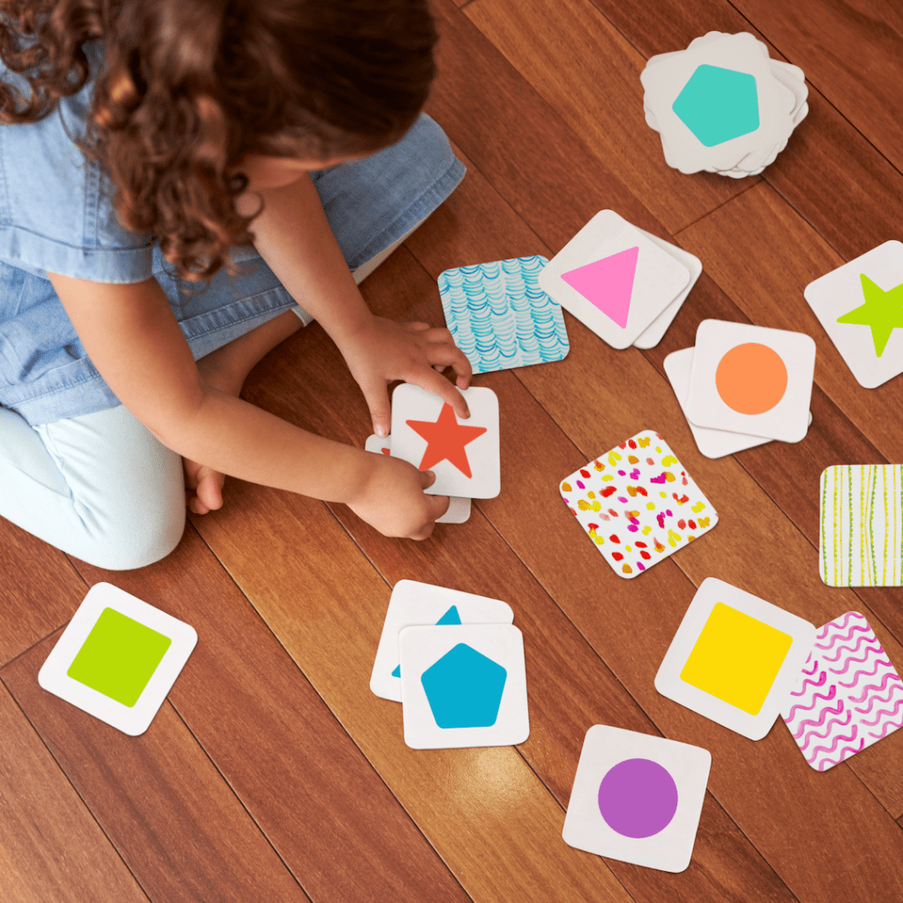
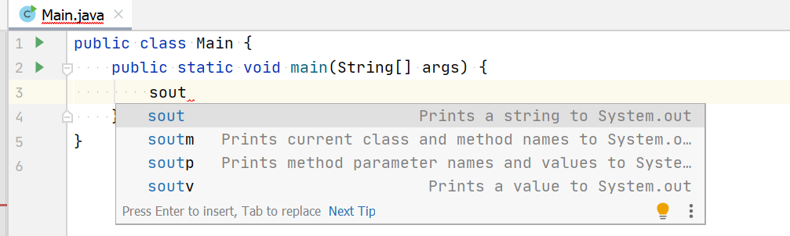

Витрина каноничных компонентов
Это принятый дизайн-бук учебника. Он показывает, как оформлять новые главы и как сохранять визуальную логику утверждённых глав при редактировании.
Первая часть хранит реальные фрагменты глав для регрессионной проверки. Вторая часть содержит короткие рецепты с постоянными якорями component-*. Пример, помеченный как legacy regression, нужен только для защиты старых глав. Его не используют в новом материале.
Контрольные компоненты
Обычная таблица
| Утверждение | Значение |
|---|---|
| \(7\) — простое число | истина |
| \(8\) — простое число | ложь |
| \(7 + 5\) | не является логическим высказыванием |
| Это красивый рисунок | не является логическим высказыванием |
Таблица с короткими комментариями и подписью
| Вызов | Что делает |
|---|---|
System.out.print(x) |
Печатает x без перевода строки |
System.out.println(x) |
Печатает x и переводит строку |
System.out.println() |
Просто переводит строку |
Основные способы вывода строк
Комментарий без заголовка
Задача с развёрнутым решением
Задача:
Маша собирается съесть яблоко, сливу и мандарин, но порядок еще не выбрала. Сколькими способами это можно сделать?
Решение:
Обозначим:
- Я — яблоко
- С — слива
- М — мандарин
Например, СМЯ означает: сначала слива, потом мандарин, потом яблоко.
Выпишем варианты в лексикографическом порядке:
Получаем \(6\) вариантов.
Решение с вложенной таблицей
Задача: восстановите формулу по этой таблице истинности.
| \(A\) | \(B\) | \(X\) |
|---|---|---|
| 0 | 0 | 1 |
| 0 | 1 | 1 |
| 1 | 0 | 0 |
| 1 | 1 | 1 |
Решение:
Способ 1. По строкам, где \(X = 1\).
Выделим все строки, в которых функция равна \(1\). Для каждой такой строки составим произведение, истинное только в этом случае:
- если переменная в строке равна \(0\), она входит в произведение с отрицанием;
- если переменная равна \(1\), она входит без отрицания.
Тренировочная задача с ответом-таблицей
Задачи для тренировки: доказательство по таблице истинности
1. Докажите по таблице истинности закон двойного отрицания:
Ответ
| \(A\) | \(\overline A\) | \(\overline{\overline A}\) |
|---|---|---|
| 0 | 1 | 0 |
| 1 | 0 | 1 |
Столбцы \(A\) и \(\overline{\overline A}\) совпадают, значит равенство доказано.
Тренировочная задача с пояснением к коду
Задачи для тренировки: логические выражения и boolean
1. Запишите логическое выражение, которое истинно, если целые a и b равны.
Ответ
Это сравнение на равенство. Один знак = здесь не подойдёт: он делает присваивание.
Несколько задач с разделителем
Задачи для тренировки
1. Переведите в двоичную систему:
a) \(\mathtt{AF}_{16}\)
b) \(\mathtt{9B}_{16}\)
c) \(\mathtt{C5}_{16}\)
Ответ
a) \(\mathtt{10101111}_2\).
b) \(\mathtt{10011011}_2\).
c) \(\mathtt{11000101}_2\).
2. Переведите в шестнадцатеричную систему:
a) \(\mathtt{10101100}_2\)
b) \(\mathtt{111001}_2\)
c) \(\mathtt{110101111}_2\)
Ответ
a) \(\mathtt{AC}_{16}\).
b) \(\mathtt{39}_{16}\).
c) \(\mathtt{1AF}_{16}\).
Ответ с блочной формулой
Задачи для тренировки: упрощение логических выражений
1. Упростите выражение:
Ответ
Слагаемые \(A \cdot \overline A\) и \(B \cdot \overline B\) исчезают по закону противоречия.
Код и вывод внутри языковых вкладок
Результат логического выражения можно сохранить в переменную типа boolean.
Имена таких переменных обычно начинаются с is, has, can и читаются как ответ на вопрос «да или нет»: isSummerMonth, isCorrectMonth, hasError.
int month = 7;
boolean isSummerMonth = (month == 6) || (month == 7) || (month == 8);
System.out.println(isSummerMonth);
true
Здесь переменная isSummerMonth хранит ответ на вопрос: «месяц летний или нет?»
Результат логического выражения можно сохранить в переменную типа bool.
Имена таких переменных обычно начинаются с is, has, can и читаются как ответ на вопрос «да или нет»: isSummerMonth, isCorrectMonth, hasError.
int month = 7;
bool isSummerMonth = (month == 6) || (month == 7) || (month == 8);
cout << boolalpha << isSummerMonth << endl;
true
Здесь переменная isSummerMonth хранит ответ на вопрос: «месяц летний или нет?»
Код с вводом и выводом
Простейшая программа на Java: читаем два целых числа из ввода и выводим их сумму.
import java.util.Scanner;
public class SumAB {
public static void main(String[] args) {
Scanner in = new Scanner(System.in);
int a = in.nextInt();
int b = in.nextInt();
int sum = a + b;
System.out.println(sum);
}
}
2 5
7
Текстовая трассировка
Та же трассировка в текстовом виде:
1. first = "мама", second = "кот"
2. second = "котик"
3. first = "супермама"
4. second = "супермамакотик"
Задачи Яндекс Контеста
Яндекс Контест: «01. Переменные» (задачи N-O)
Ссылка на контест: 01. Переменные (только для зарегистрированных учеников курса learncs.ru)
Даны три строки, каждая из которых состоит только из цифр. Склейте их в одну строку, преобразуйте результат в число, прибавьте 1 и выведите ответ.
В первой, второй и третьей строках записаны строки из цифр. Гарантируется, что после склейки получается целое число, не превосходящее 10^9.
Выведите одно целое число — результат описанных действий.
12 34 5
12346
0 0 0
1
Даны пять строк, каждая из которых состоит только из цифр. Склейте их в одну строку, преобразуйте результат в число типа long, прибавьте 1 и выведите ответ.
В пяти строках записаны строки из цифр. Гарантируется, что после склейки получается целое число, не превосходящее 10^18.
Выведите одно целое число — результат описанных действий.
12 34 56 78 9
123456790
0 0 0 0 0
1
Слайды
Плавающее изображение и определение: legacy regression
Этот образец защищает старые главы от случайной поломки. Для нового материала используют принятые рецепты ниже.

В информатике и математике часто бывает удобно говорить о группе чисел или о группе объектов. Такие группы мы называем множествами.
Множество – это набор чётко определённых объектов.
Объекты, входящие в множество, называют элементами.
Мы используем заглавную букву, например \(A\), чтобы обозначить множество.
Когда мы перечисляем элементы множества, мы записываем их в фигурных скобках.
Примеры множеств
- \(A = \{2, 3, 5, 7, 11\}\) – множество простых чисел, которые меньше 13.
- \(B = \{a, e, i, o, u\}\) – множество всех гласных английского алфавита.
- \(C = \{\text{голубой}, \text{серый}, \text{карий}, \text{коричневый}, \text{зелёный}\}\) – множество цветов глаз учеников в классе.
Нумерованный алгоритм
Цифровое представление строится так:
- исходные данные разбивают на отдельные элементы;
- каждому элементу ставят в соответствие число;
- число записывают в двоичном виде;
- при чтении выполняют обратные шаги.
Составные формулы
Числа, которыми мы пользуемся в повседневной жизни, записываются в системе с основанием \(10\). Например, число \(253\) можно записать так:
Функция модуля \(|x|\) преобразует любое целое число в неотрицательное:
Упростим это выражение.
Изображение без локальной компоновки

Скачивание файла
Блок источников
По материалам:
1. К. Ю. Поляков, Е. А. Еремин. Учебник информатики для 10–11 классов. Углубленный уровень.
2. Anthony Croft, Robert Davison. Foundation Maths. Pearson.
3. ВМК МГУ — школе. Информатика: пособие для подготовки к ЕГЭ.
Каноническая подпись таблицы
| \(A\) | \(B\) | A && B |
|---|---|---|
false |
false |
false |
false |
true |
false |
true |
false |
false |
true |
true |
true |
Таблица истинности для И
Принятые рецепты
Эти примеры используют в новом материале. При редактировании старой главы сначала сохраняют её учебную композицию, затем заменяют локальную разметку ближайшим подходящим рецептом.
Суммы по строкам
Заголовок третьего уровня нужен, когда внутри раздела появляется самостоятельный небольшой вопрос, но материала недостаточно для новой подглавы.
Чтобы найти сумму строки двумерного массива, перебирают её элементы и накапливают результат в отдельной переменной.
Формула как самостоятельный объект
Если формула показывает значения, сравнение или отдельную конструкцию и не продолжает предложение, знаки препинания в конце строк не добавляют.
Формула как часть предложения
Если текст продолжается после формулы, знак препинания связывает части одного предложения. Например, площадь прямоугольника вычисляют по формуле
где \(a\) и \(b\) обозначают длины его сторон.
Сопоставление частей записи
Цвет связывает одинаковые смысловые части словесного чтения и формулы. Его не используют как самостоятельное выделение.
Мы читаем это как: множество всех целых чисел \(x\) таких, что \(x\) лежит между \(-3\) и \(5\)
Центрированное изображение без подписи

Центрированное изображение с содержательной подписью
У схемы или таблицы подпись является частью объяснения и сохраняет обычный размер текста.

Небольшая иллюстрация справа
У дополнительной иллюстрации справа подпись компактнее основного текста. После связанного текста обтекание завершают явно. В узкой области иллюстрация становится отдельным центрированным блоком, чтобы текст не сжимался в нечитаемую колонку.

В информатике и математике часто бывает удобно говорить о группе чисел или объектов. Такие группы называют множествами.
Небольшое изображение справа без подписи
Без подписи действует то же правило: на обычной ширине изображение находится справа и отделяется от текста общим отступом. В узкой области оно становится отдельным центрированным блоком.

Методы point и line рисуют точки и отрезки. Координаты должны находиться в области рисования.
Короткий вывод справа
Нечётное
Пояснение рядом с основным материалом
Связанные материалы сохраняют рядом в паре 2:1: основной объект слева, короткое пояснение справа.
Рекуррентная формула – это формула, где значение для \(n\) выражено через значение для меньшего числа.
Текст и краткая справка
Если первый столбец называет поля, таблице не нужна искусственная строка заголовков.
Тип boolean хранит логические значения. У него только два значения: true и false.
Результат любой логической операции тоже имеет тип boolean.
| значения | true или false |
|---|---|
| операторы | && || ! |
Встроенный тип boolean в Java
Схема и связанный с ней синтаксис
Схему и код читают параллельно в паре 60:40.

команда 1;
команда 2;
}
Объединённая ячейка таблицы
HTML используют, когда смысловая структура не выражается Markdown-разметкой. Формула двойного отрицания относится к обеим операциям, поэтому ячейка занимает два столбца.
| Закон | Для операции И | Для операции ИЛИ |
|---|---|---|
| Двойного отрицания | \(\overline{\overline A} = A\) | |
| Исключённого третьего | \(A \cdot \overline A = 0\) | \(A + \overline A = 1\) |
Законы алгебры логики
Карточка задачи с формулой и пустым вводом
Пустой блок «Ввод» сохраняют: он явно показывает, что входных данных нет. Формулу внутри условия оформляют классом problem-math.
Яндекс Контест: задача E «Фигура из звёздочек»
Выведите n строк указанной фигуры.
* *** *****
Азбука Морзе и кодируемый текст
| Символ | Код Морзе |
|---|---|
| S | ... |
| O | --- |
Закодируйте слово CAT: -.-. .- -.
Таблица кодов символов
Таблица цветов RGB
| Цвет | Название | R G B | Байты | HEX |
|---|---|---|---|---|
| чёрный | 0 0 0 | 00000000 00000000 00000000 |
#000000 |
|
| белый | 255 255 255 | 11111111 11111111 11111111 |
#FFFFFF |
|
| красный | 255 0 0 | 11111111 00000000 00000000 |
#FF0000 |
Кодирование основных цветов
Подробные типы TikZ-иллюстраций остаются в отдельной витрине иллюстраций.
В шестнадцатеричной системе после \(\mathtt{9}\) используют буквы \(\mathtt{A}\)–\(\mathtt{F}\): символов \(\mathtt{0}\)–\(\mathtt{9}\) не хватает для 16 разных цифр. Здесь \(\mathtt{A}\)–\(\mathtt{F}\) — это тоже цифры (одиночные символы), которые обозначают значения \(10\)–\(15\): \(\mathtt{A}=10, \mathtt{B}=11, \dots, \mathtt{F}=15\).
Важно различать цифру и число: цифра — один символ в записи, а число — само значение. Например, в записи \(314_{10}\) число равно \(314\), а \(3\), \(1\) и \(4\) — цифры этого числа.